SGC TECH AI — ANIMATION AUDIT
| LABEL | MEANING |
|---|---|
| CURRENT | Animation / motion already live in the codebase |
| SUGGESTION | Specific storytelling animation recommended to add next |
| CODE HINT | Tool + implementation approach (not production code) |
Animation tool split (CLAUDE.md): scroll-scrubbed → GSAP ScrollTrigger · component micro-interactions → motion/react · 3D per-frame → R3F useFrame
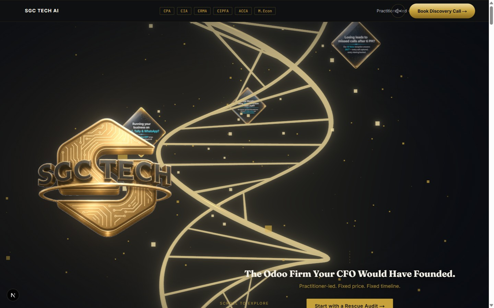
<GoldHairline>.Stagger the credential badges in from below with a 40ms delay between each: opacity 0→1 + translateY 8px→0, ease-out-quart, 420ms each. The sequence reads left-to-right like a résumé being handed over — the first authority claim the page makes should feel deliberate, not instant.
Before the user scrolls, add a slow 6s Y-bob on the camera (sin(t × 0.4) × 0.06 world units) via useFrame. Cease the bob the moment scroll > 5px. This makes the 3D scene feel inhabited rather than frozen while the user reads the hero copy.
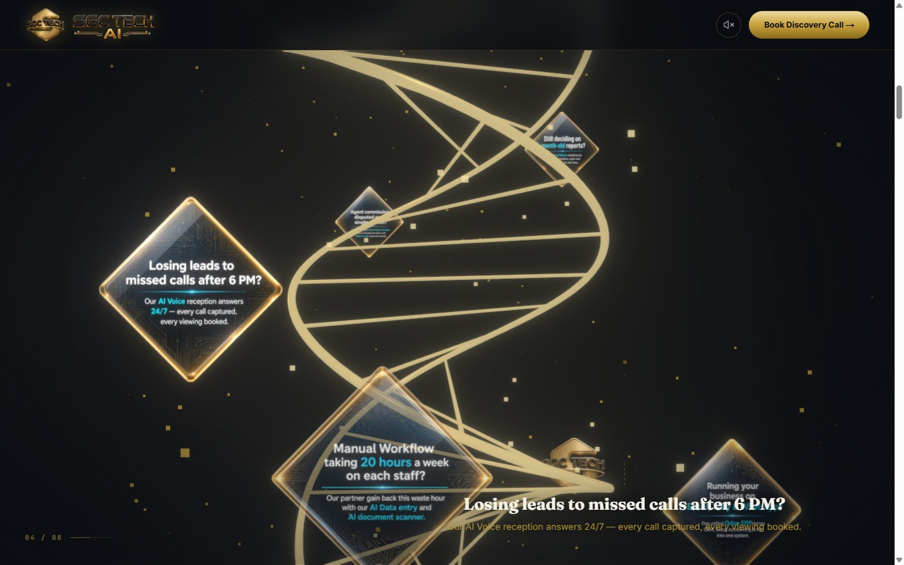
Split the headline into words and stagger each: opacity 0→1 + translateY 6→0 at 35ms per word. This mimics how a speaker delivers the line. Keep the exit as a single full-block fade for contrast.
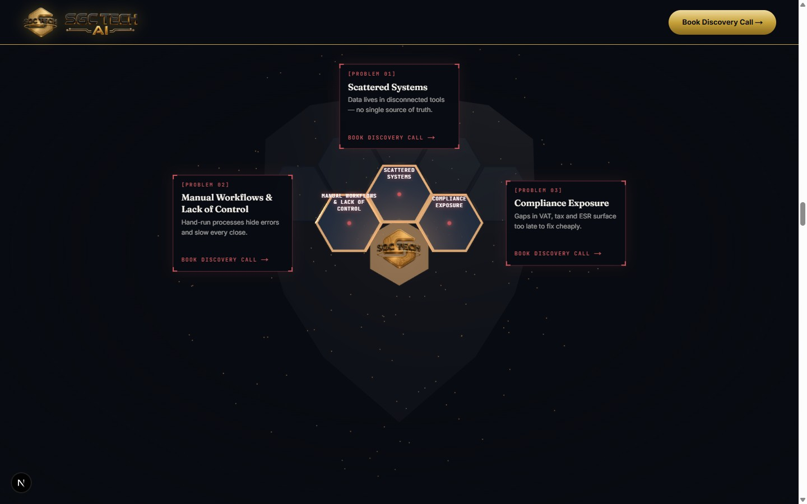
Animate each cost figure counting up from 0 to its value over 1.2s (easeOut), triggered when the cost grid enters the viewport. The total sum lands 400ms after the last item. Seeing numbers accumulate makes the pain visceral and quantified — the visitor feels the cost, not just reads it.
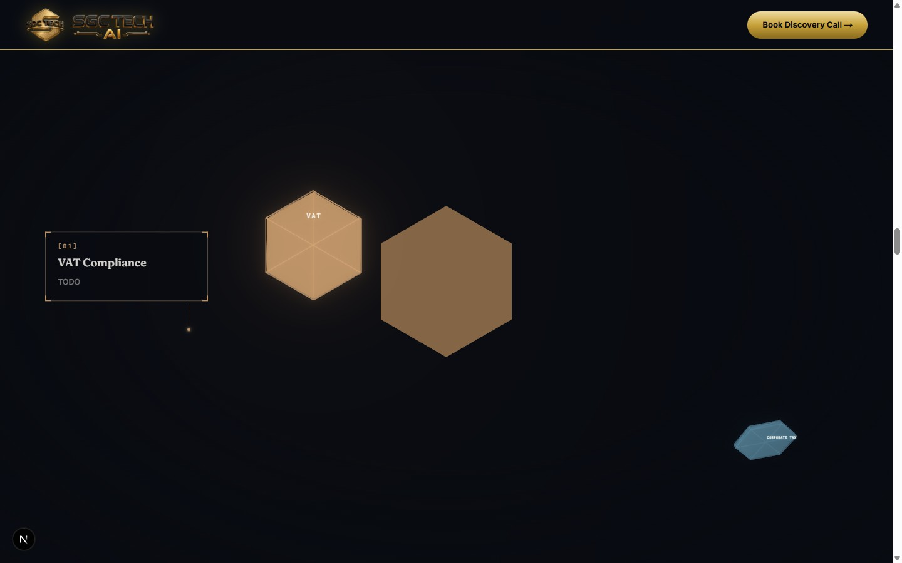
When each hex tile reaches its locked position, nudge it 3px toward the cluster center then snap back over 120ms (spring, no bounce). This gives the assembly physical weight — like precision tiles being placed by hand.
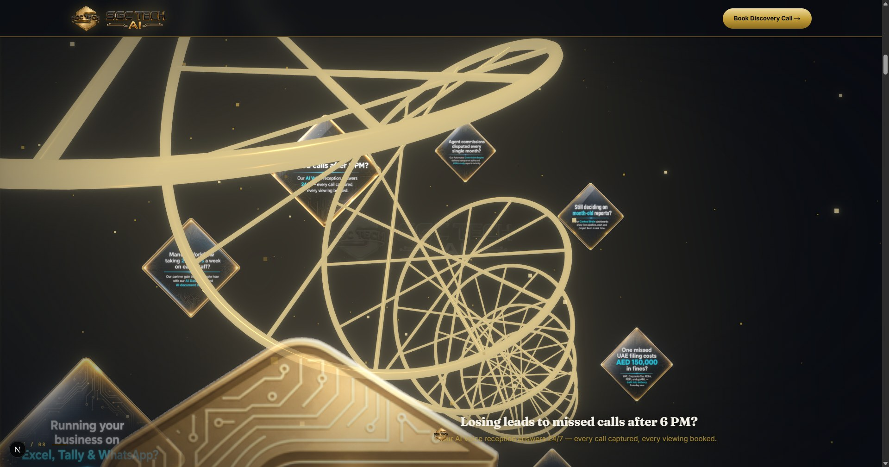
As each tile locks (0→5), increase ShieldFrame tube emissive intensity: start 0.3, add +0.12 per locked tile, reach 1.0 when all 6 are in. The frame literally brightens as protection becomes complete.
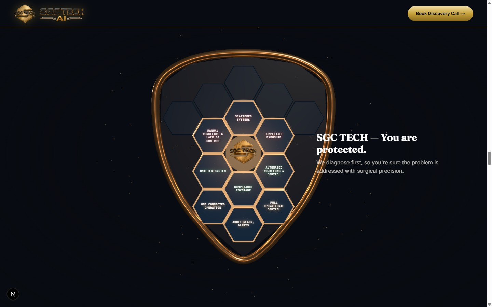
Instead of cards fading out, each card translates toward the shield center (staggered 60ms) while scaling to 0.05 and fading — as if absorbed. Six compliance pillars → one shield. Then ShieldSummaryCallout rises from below.
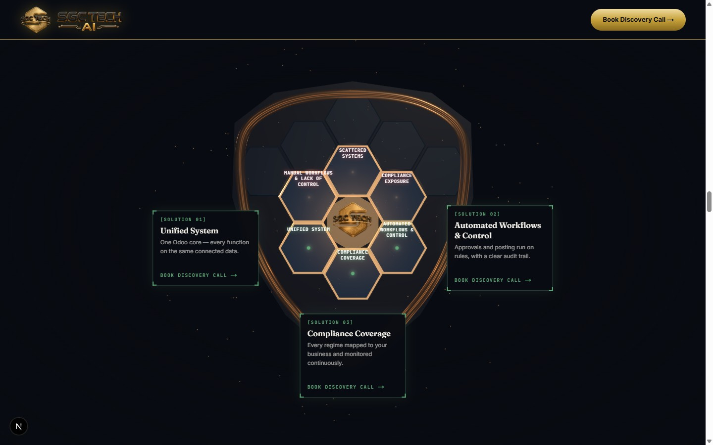
The five stack layers build upward from Infrastructure → AI Layer: each slides up (translateY 24→0, opacity 0→1) with 120ms stagger. Foundations first, intelligence on top — the visual metaphor mirrors what SGC builds for clients.
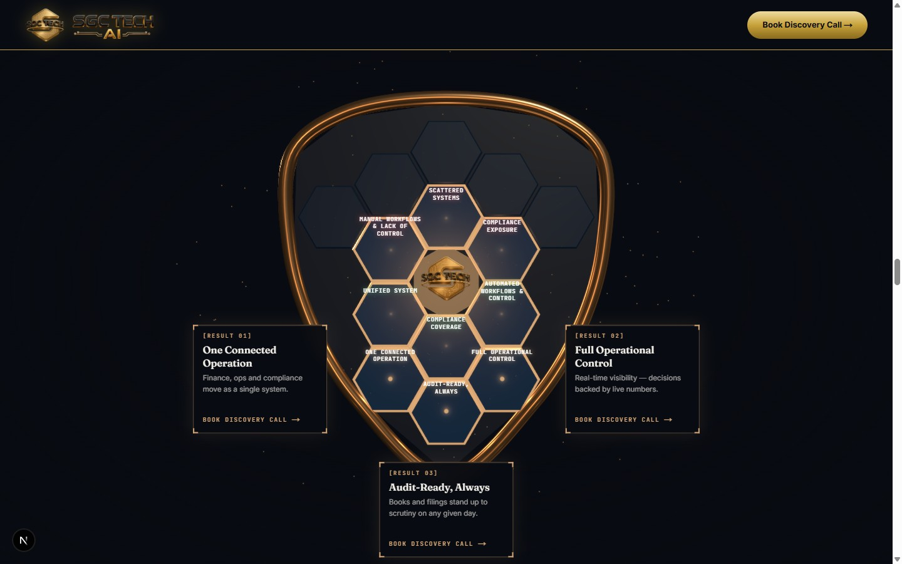
Numerical outcomes (days saved, AED figures, percentages) count up from 0 as the section enters. A faster ease-in-out (400ms) — success numbers should land with confidence. A gold SVG checkmark draws in via stroke-dashoffset (150ms) after each number settles.
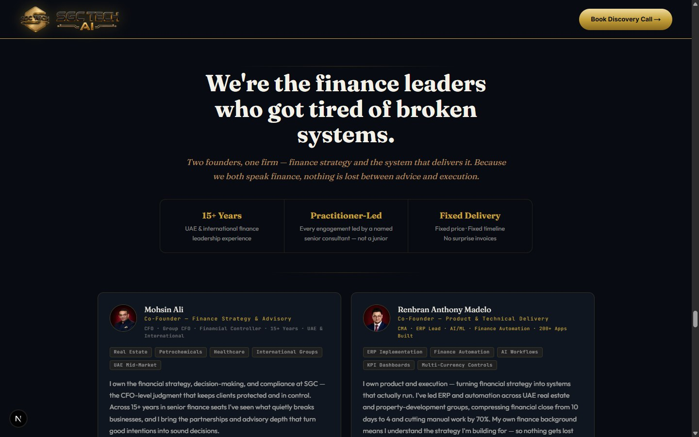
The founder photo enters with a vertical clipPath reveal (inset 100%→0%, 600ms ease-out-quart) — like a file being opened. Each credential badge (CPA, CIA, etc.) draws in from the left staggered 80ms apart — as if being placed on a desk.
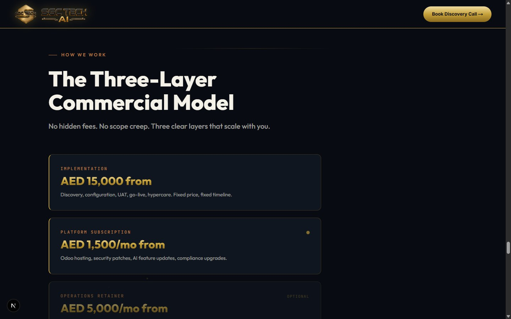
A connecting timeline line between the three phases (Audit → Implement → Maintain) draws left-to-right via SVG stroke-dashoffset over 800ms. Each phase card pops in sequentially once the line reaches it: scale 0.92→1.0 + opacity 0→1.
When the recommended tier enters viewport, it pulses once: scale 1.0→1.03→1.0, gold border glow 0→1→0, over 600ms. Other tiers dim simultaneously. A one-shot gesture — like an advisor quietly tapping the right option.
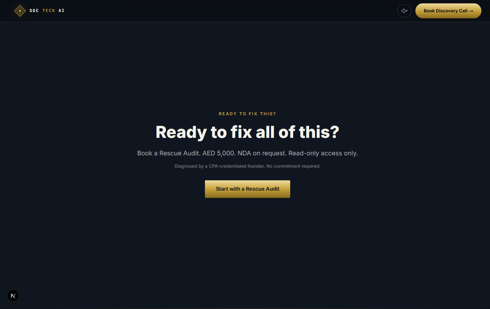
"DUBAI, 2026" types in character-by-character (35ms/char) to open like a physical letter. Each paragraph fades in with a gradient wipe sweeping left-to-right (600ms) — the feel of ink drying. This section is the most personal; motion should feel like correspondence.
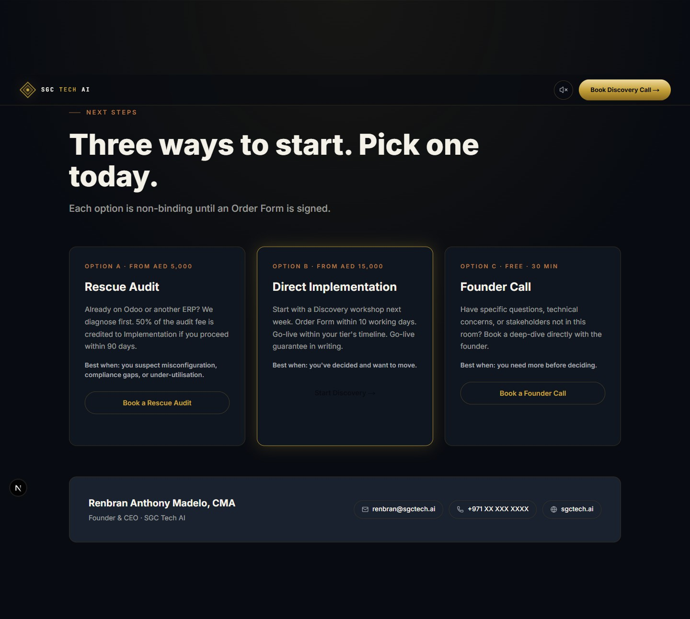
Each form field slides in from x -16→0, opacity 0→1, staggered 60ms apart. On focus, a 1px gold underline draws left-to-right in 200ms — extending the existing <GoldHairline> pattern into form UX.
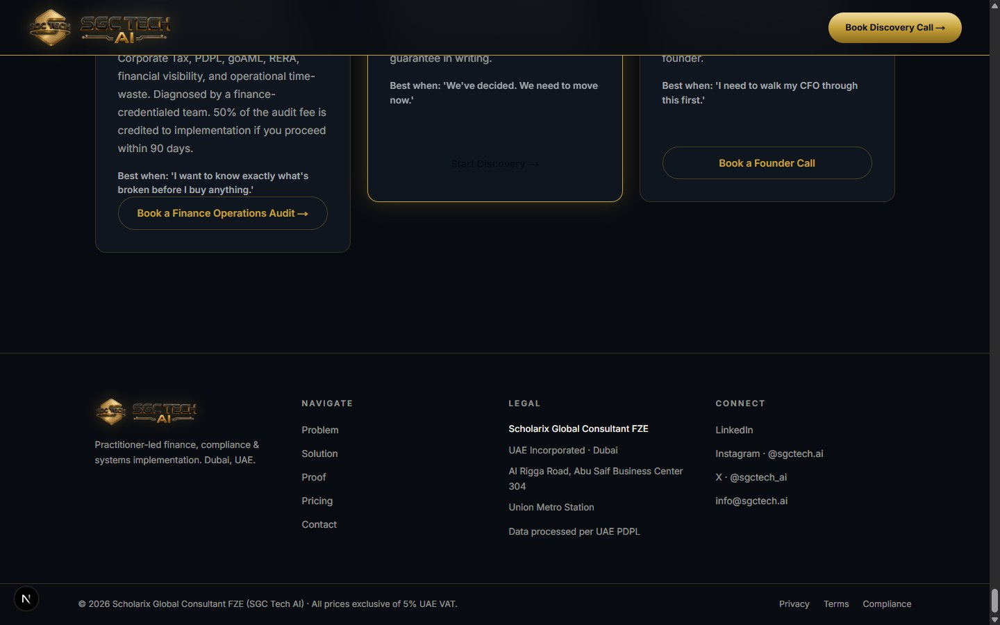
When the user scrolls within range of the footer (IntersectionObserver, amount: 0.1), stagger footer columns: opacity 0→1, y 12→0, 80ms gap. A quiet, dignified close — total silence feels unfinished. This signals "you've arrived."
The full scroll journey should feel like a practitioner's briefing.
| PHASE | SECTIONS | TONE |
|---|---|---|
| Establish authority | Navbar, CredentialRow, Hero | Measured, confident reveal |
| State the problem | Problem Section | Data accumulates — visceral, quantified |
| Show the diagnosis | Shield Section | Mechanical precision, each tile a proof point |
| Present the solution | Solution, Case Study | Architecture builds upward, results land hard |
| Introduce the people | Founder | Personal, credential-forward, human |
| Commercial clarity | Commercial Model, Pricing | Clean sequence, one recommendation spotlit |
| Invitation | Section Eight, Contact | Letter cadence — personal, unhurried |
| Close | Footer | Quiet, dignified, complete |
Ordered by storytelling impact vs. implementation cost.
| # | SECTION | SUGGESTION | EFFORT |
|---|---|---|---|
| 01 | Problem Section | Cost counter roll-up | LOW |
| 02 | Solution Section | Stack layer build bottom-to-top | LOW |
| 03 | Section Eight | Dateline typewriter + ink-reveal | LOW |
| 04 | Pricing | Recommended tier spotlight pulse | LOW |
| 05 | Case Study | Result numbers count up | LOW |
| 06 | Contact | Field stagger + gold hairline on focus | LOW |
| 07 | Founder | Photo clip reveal + credential cascade | LOW |
| 08 | CredentialRow | Trust cascade on load | LOW |
| 09 | Footer | Column fade-up on approach | LOW |
| 10 | Shield Finale | Cards converge into shield | MEDIUM |
| 11 | Commercial Model | Phase timeline line draw-in | MEDIUM |
| 12 | Shield Mid | Frame glow intensify with each tile | MEDIUM |
| 13 | Hero | Camera breath idle pre-scroll | MEDIUM |
| 14 | Hero Captions | Word-by-word reveal | LOW |
| 15 | Shield Tiles | Lock position micro-shake | MEDIUM |